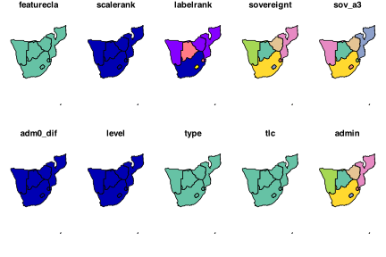
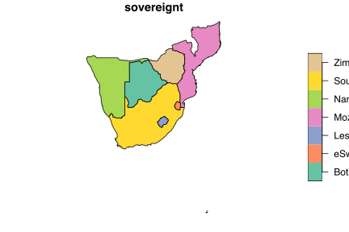
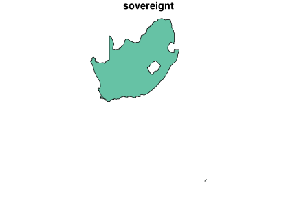
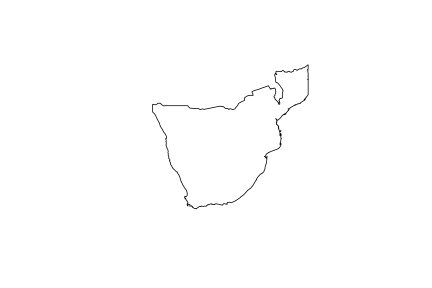
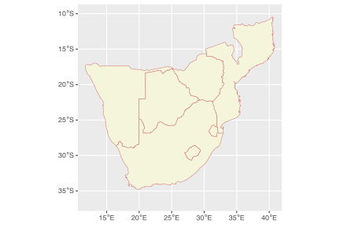

![]()
# install.packages("rnaturalearth", "rnaturalearthdata", "sf")
library(tidyverse)
library(sf)
library(rnaturalearth)
library(rnaturalearthdata)
# for the buffer to work as I expect, swith off
# the functions for spherical geometry:
sf_use_s2(FALSE)9. Mapping with Natural Earth and the sf package
Using Natural Earth data with sf and ggplot2
“The only thing Google has failed to do, so far, is fail.”
— John Battelle
“I’m afraid that if you look at a thing long enough, it loses all of its meaning.”
— Andy Warhol
1 Web resources about R for Spatial Applications
Now that we are upgrading to better, more powerful maps, you’ll need to refer to industrial-strength documentation for detailed help. Please refer to links below for information about the vast array of functions available for spatial computations and graphics.
Web resources about spatial methods in R
| AUTHOR | TITLE |
|---|---|
| Spatial R | |
| Edzer Pebesma | Simple Features for R |
| Edzer Pebesma, Roger Bivand | Spatial Data Science with applications in R |
| Robin Lovelace et al. | Geocomputation with R |
| Manuel Gimond | Intro to GIS and Spatial Analysis |
| Wasser et al. | Introduction to Geospatial Raster and Vector Data with R |
| Taro Mieno | R as GIS for Economists |
THIS PAGE IS NOT DSPLAYING THE OUTPUT OF CODE AT PRESENT DUE TO AN UPDATE OF THE SF PACKAGE THAT CAUSED IT TO BREAK. I WILL ENABLE THE OUTPUT AGAIN ONCE THE AUTHORS HAVE CORRECTED THEIR CODE
2 The sf package
The sf package in R is a package for handling and processing spatial data. In recent years it has become the de facto package to use for many mapping application, replacing older packages such as sp and including the C libraries GEOS 3, GDAL, and PROJ. It provides classes for storing and manipulating simple feature geometries, and functions for working with spatial data. ‘Simple features’ refer to a standardised way of encoding vector data, including points, lines, and polygons, that are widely used in geographic information systems (GIS).
The sf package was created to provide a fast and efficient way to work with vector data in R, and it is designed to integrate with other packages in the tidyverse, such as dplyr and ggplot2, allowing for seamless processing and visualisation of spatial data. The package provides a variety of functions for data import, transformation, manipulation, and analysis, making it a valuable tool for working with spatial data in R.
In addition to its core functionality, the sf package also provides a set of methods for converting between different data representations, such as data frames, matrices, and lists, making it a versatile tool for working with spatial data in a variety of formats.
While sf works with vector data, raster data require the well-known but old raster package, or its modern replacements terra and stars. I will not work with raster data in this Chapter.
3 Maps with rnaturalearth
Natural Earth is a public domain map dataset that provides high-quality, general-purpose base maps for the world at various scales. It was designed to be a visually pleasing alternative to other public domain datasets, and its creators aim to provide the data in a form that is useful for a wide range of applications and to make it easy to use and integrate with other data.
The dataset includes a variety of geographic features, including coastlines, rivers, lakes, and political boundaries, as well as cultural features like cities, roads, and railways. The data are available in several different formats, including vector and raster, and it can be used with a variety of software, including GIS and mapping applications. Within R we can access these map layers using the rnaturalearth package.
One of the key benefits of Natural Earth is its public domain status, which means that anyone can use and distribute the data without restrictions or licensing fees. This makes it an ideal choice for organizations, governments, and individuals who need high-quality base maps for their projects but may not have the resources or expertise to create them from scratch. I am not convinced that students actually read this. The first person to send me a WhatsApp mentioning the phrase “Know your maps” will get a Lindt chocolate.
In addition to its public domain status, Natural Earth is also regularly updated with new data to ensure that the maps remain accurate and up-to-date. This makes it a valuable resource for anyone who needs reliable and up-to-date geographic data.
4 Install packages and set things up
First, I define the extent of the map region:
# the full map extent:
xmin <- 12; ymin <- -36.5; xmax <- 40.5; ymax <- -10
xlim <- c(xmin, xmax); ylim <- c(ymin, ymax)
# make a bounding box for cropping:
bbox <- st_bbox(c(xmin = xmin, ymin = ymin,
xmax = xmax, ymax = ymax))
# might be useful for zooming into a smaller region (False Bay and
# the Cape Peninsula):
xlim_zoom <- c(17.8, 19); ylim_zoom <- c(-34.5, -33.2)5 Load the data and make maps
# load the countries:
safrica_countries <- ne_countries(returnclass = 'sf',
continent = "Africa",
country = c("South Africa", "Mozambique",
"Namibia", "Zimbabwe", "Botswana",
"Lesotho", "Eswatini"),
scale = "large")Let us see what is inside the safrica_countries object:
As you can see, it is a data.frame and tbl (tibble), amongst other classes, and so we can apply many of the tidyverse functions to it, including select(), filter(), summarise() and so on. The class() argument additionally indicates that it has some simple features properties, so some functions provided by the sf package also becomes available to use. We can see some of these functions in action, below.
The
sf class
sf indicates that the object is of class simple features. In sf language, what would be called columns (variables) in normal tidyverse speak becomes known as attributes—these are the properties of the map features, with the features being the types of geometrical representations of geographical objects.
Let us plot the entire safrica_countries object to see all the attributes of all of the features. This kind of figure a called a choropleth map:
plot(safrica_countries)
We probably don’t want to plot all of them. Let us select one:
plot(safrica_countries["sovereignt"])
We might achieve the same in a more familiar way:
Or we may want to plot the estimate of the population size, which is contained in the attribute pop_est:

The names of the countries are in the rows down the safrica_countries object, and so they become accessible with filter(). Let us only plot some attribute for South Africa:

We can continue to add additional operations to create a new map:
safrica_countries_new <- safrica_countries |>
group_by(continent) |>
summarise() |>
st_crop(bbox) |>
st_combine()
plot(safrica_countries_new)
Task F
- Please explain in English what the code above does, line by line.
So far we have relied on the base R plot function made for the simple features. We can also plot the map in ggplot using a more familiar and more customisable interface:
ggplot() +
geom_sf(data = safrica_countries,
colour = "indianred", fill = "beige") +
coord_sf(xlim = xlim,
ylim = ylim)
Now we can layer another feature:
6 Example
Here are examples that use the built-in Fiji earthquake data or the Kaggle earthquake data.
Task F
What’s going on in the above figure?
Why are we now again plotting the full, original map extent to the south?
What does
st_buffer(0.4)do?With the above map, zoom into False Bay and the Cape Peninsula.
Create your own map of your favourite country (not South Africa).
- Make sure that the country is displayed inside of the continent where it is located, and ensure that the border of your country stands out from the surrounding countries.
- Indicate on the map using points the names of three places you want to visit there.
Create the most beautiful graphs you can.
Bonus Task
Successfully completing on of the options available in this task will earn you a bonus of up to 8 or 10% onto your CA mark.
You have until 31 March 2023 to complete it.
A map that is worthy of display will become a large format poster to display in the BCB Department. Your name displayed next to it will immortalise you for continued fame and glory amongst future BCB students.
The winner of each category of map (hypometric and non-hypsometric) will also get a box of Lindt chocolate.
Option 1 [up to 10% bonus]: Create a hypsometric map based on these examples


The maps show the locations of linefish catches along the SA coast as per a DFFE dataset. I do not expect that you add these data points as you don’t have access to this dataset. However, the location of the 58 coastal sections indicated by circles can be plotted using the data provided here. You are also welcome to create a map of any topographically-interesting region on Earth, but be sure to include a few data points of some kind to draw our attention to some interesting features or statistics. Be creative!
Since I think a few of you might actually accomplish this, best add a few improvements to it to make your map even better than mine and stand out from that of your peers. There can be only one winner in each category, and the best one wins (although everyone can benefit from the bonus marks).
Warning: You’ll need a fairly beefy computer to accomplish this task.
Option 2 [up to 8% bonus]: Create an artistic map of your choice
Alternatively, if you cannot access a powerful computer, for a bonus of up to 8% onto your CAM, create any (non-hypsometric) map of your choice of any region on Earth. Make something that you would be proud to display as a large format poster. The map may draw attention to an interesting regional geophysical, ecological, or socio-ecological (etc.) phenomena, or it may simply showcase your unique (but tasteful!) artistic ability. Show me some examples of what you wish to create before you start to avoid wasting your time on something too simple or entirely tasteless. There are many examples of beautiful maps on the internet that you may use as source of inspiration.
Whichever option you choose, please also submit your code together with the final product in a well-described Quarto .html document. Explain each step of the way and describe the rationale for the approach you take.
Good luck!
Reuse
Citation
BibTeX citation:
@online{smit2021,
author = {Smit, AJ},
title = {9. {Mapping} with {Natural} {Earth} and the **Sf** Package},
date = {2021-01-01},
url = {https://tangledbank.netlify.app/BCB744/intro_r/09-mapping_rnaturalearth.html},
langid = {en}
}
For attribution, please cite this work as:
Smit A (2021) 9. Mapping with Natural Earth and the **sf** package. https://tangledbank.netlify.app/BCB744/intro_r/09-mapping_rnaturalearth.html.